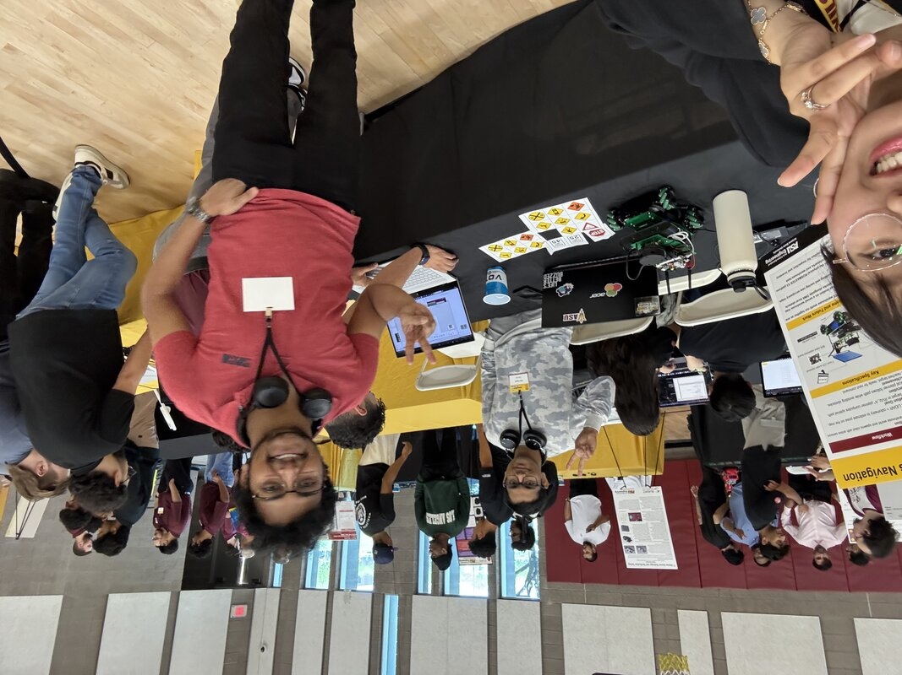

ROSMASTER Autonomous
Navigation System
Digital Twin & AWS Warehouse Simulation with Full ROS Navigation Stack

🔗 Project Resources
📦 Main Repository: EGR-530-ROSMASTER-PROJECT
🌐 Project Website: ROSMASTER Navigation Documentation
📄 Full Documentation: Installation guides, architecture diagrams, troubleshooting, and usage instructions


Project Overview
Developed a complete autonomous navigation system for the ROSMASTER X3 robot as part of Arizona State University's EGR-530 course. The project implements a digital twin in Gazebo simulation integrated with an AWS RoboMaker warehouse environment, featuring full ROS navigation stack with AMCL localization, custom A* path planning, and dynamic obstacle avoidance capabilities.
System Demonstrations
The following videos showcase the ROSMASTER X3's autonomous navigation capabilities including sign detection, obstacle avoidance, and goal-based navigation:
Complete Navigation Demonstration
Feature Demonstrations
ROSMASTER Overview
Red Stop Sign Detection
Yellow Warning Sign
Obstacle Avoidance
Key Features
- Digital Twin Simulation: URDF-based ROSMASTER X3 model in Gazebo with LiDAR and RGB camera sensors
- AWS Warehouse Environment: Pre-built warehouse world with shelves, obstacles, and realistic layout
- Autonomous Navigation: Goal-based navigation using AMCL localization and move_base framework
- Custom Path Planning: A* global planner for optimal pathfinding
- Dynamic Obstacle Avoidance: DWA (Dynamic Window Approach) local planner for real-time collision avoidance
- SLAM Capability: Map creation using gmapping and Google Cartographer
- ArUco Marker Detection: Computer vision-based sign recognition (red stop, yellow warning)
- Mecanum Wheel Support: Full omnidirectional movement capability
System Architecture
The navigation system follows a modular ROS architecture with distinct layers for simulation, perception, planning, and control:
Core Components
- Gazebo Simulation: AWS warehouse environment with ROSMASTER X3 digital twin
- Map Server: Publishes pre-built warehouse map for localization
- AMCL (Adaptive Monte Carlo Localization): Particle filter-based position estimation
- move_base: Central navigation controller coordinating global and local planners
- Global Planner: Custom A* implementation for long-range path planning
- Local Planner: DWA for short-range obstacle avoidance and trajectory generation
- Costmaps: Static and dynamic obstacle detection with inflation layers
- Velocity Smoother: Command filtering for smooth motion execution
ROS Topics & Data Flow
- /scan (sensor_msgs/LaserScan) - LiDAR point cloud data
- /cmd_vel (geometry_msgs/Twist) - Velocity commands to robot
- /odom (nav_msgs/Odometry) - Wheel encoder odometry
- /map (nav_msgs/OccupancyGrid) - Static map of warehouse
- /amcl_pose (geometry_msgs/PoseWithCovarianceStamped) - Estimated robot position
- /move_base/goal (move_base_msgs/MoveBaseActionGoal) - Navigation goals from RViz
Technical Implementation
ROS Packages Developed
- aws-robomaker-small-warehouse-world: AWS RoboMaker warehouse simulation environment
- digital_twin_description: ROSMASTER X3 URDF model with complete sensor suite and navigation stack configuration
Navigation Stack Configuration
The navigation stack was tuned specifically for the ROSMASTER X3's mecanum wheel kinematics:
- Maximum Linear Velocity: 0.3 m/s
- Maximum Lateral Velocity: 0.2 m/s (mecanum advantage)
- Angular Velocity: 1.0 rad/s
- Localization Update Rate: 10 Hz
- Path Planning Frequency: 5 Hz
- Obstacle Detection Range: 0.35 - 12 m (LiDAR)
SLAM Mapping
The system supports two SLAM algorithms for creating new warehouse maps:
- gmapping: Particle filter-based SLAM for 2D occupancy grid generation
- Google Cartographer: Graph-based SLAM with loop closure optimization
Performance Metrics
| Metric | Value |
|---|---|
| Navigation Accuracy | ±15 cm position, ±15° orientation |
| Goal Success Rate | 95%+ in simulation environment |
| Obstacle Detection Range | 0.35 - 12 meters (LiDAR) |
| Maximum Speed | 0.3 m/s linear, 0.2 m/s lateral |
| Localization Update Rate | 10 Hz |
| Path Planning Frequency | 5 Hz |
Computer Vision Integration
Integrated ArUco marker detection for visual sign recognition and behavior modulation:
- Red Stop Sign: Robot halts navigation and waits until path is clear
- Yellow Warning Sign: Reduces speed and increases obstacle detection sensitivity
- Detection Pipeline: RGB camera → OpenCV ArUco detection → Behavior controller
Challenges & Solutions
Challenge: Mecanum Wheel Kinematics in ROS
Solution: Implemented custom velocity controller to translate holonomic movement commands into individual wheel velocities. Tuned move_base parameters specifically for omnidirectional movement capabilities.
Challenge: AMCL Localization Drift in Large Spaces
Solution: Increased particle count in AMCL configuration and tuned laser scan matching parameters. Added periodic relocalization checkpoints throughout the warehouse map.
Challenge: DWA Local Planner Getting Stuck in Tight Spaces
Solution: Adjusted costmap inflation parameters and reduced obstacle cost scaling. Implemented recovery behaviors including in-place rotation and backing up when planning fails.
Challenge: Real-Time Performance in Complex Warehouse
Solution: Optimized costmap update frequencies and reduced laser scan processing rate. Used hierarchical planning with lower resolution global costmap.
Tools & Technologies
Robotics: ROS Melodic/Noetic, ROSMASTER X3 Platform, Mecanum Wheels
Simulation: Gazebo 9/11, AWS RoboMaker, URDF/Xacro
Navigation: AMCL, move_base, A* Planner, DWA Local Planner
SLAM: gmapping, Google Cartographer
Computer Vision: OpenCV, ArUco Markers
Sensors: RPLiDAR A1, RGB Camera (Astra/RealSense compatible)
Visualization: RViz, rqt Tools
Languages: Python, C++, XML/YAML Configuration
Key Learnings
This project demonstrated the complete pipeline for deploying autonomous navigation on a mobile robot. Gained deep understanding of ROS navigation stack architecture, SLAM algorithms, and sensor fusion techniques. Learned the importance of systematic parameter tuning for different robot platforms and environments. The digital twin approach enabled rapid iteration and testing before hardware deployment.
Future Enhancements
- Deploy navigation stack on physical ROSMASTER X3 hardware
- Implement multi-robot coordination for fleet management scenarios
- Add semantic mapping with object recognition for warehouse task planning
- Integrate manipulation capabilities for pick-and-place operations
- Extend to real-world warehouse testing and benchmarking
- Implement learned behaviors using reinforcement learning
Project Resources
Complete source code, documentation, and setup instructions are available in the project repositories:
- Main Repository: EGR-530-ROSMASTER-PROJECT
- Documentation Website: ROSMASTER Navigation Docs
- Installation guides for Ubuntu 18.04/20.04 with ROS Melodic/Noetic
- Launch file configurations for navigation and SLAM
- Parameter tuning documentation
- Troubleshooting guides and common issues